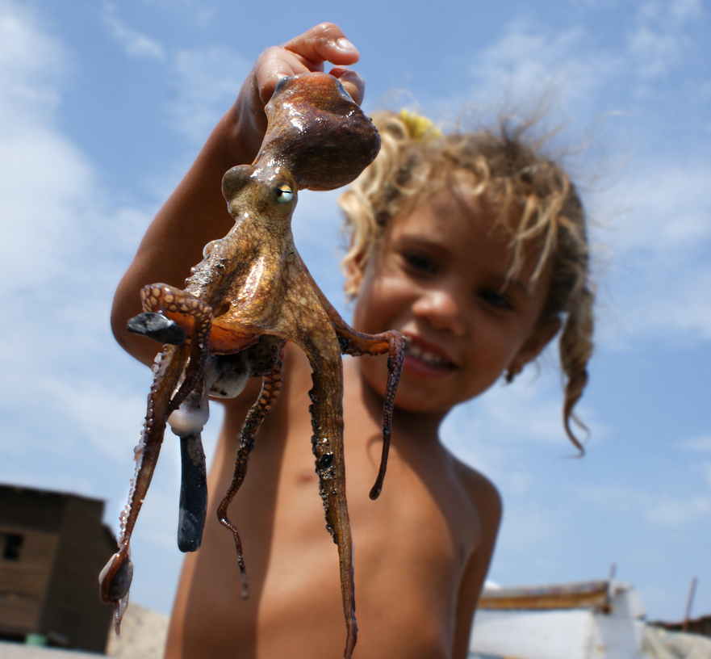

Fotografía Documental
Registrar e informar distintos aspectos de la vida, formas y condiciones. Congelar un fragmento o momento de la realidad.
Fotografía de Artes Escénicas
Forma parte de la producción del espectáculo, danza, música, teatro.

Foto de Paisaje
Representación de un espacio natural específico, ya sea natural (bosque, playas, etc.) o artificial (urbano: edificios etc.).

Fotografía de Retrato
Captar la esencia, la apariencia y los rasgos más característicos de la persona fotografiada.

Fotografía de Bodas
Especialidad en fotografía que se centra principalmente en la fotografía de eventos y actividades relacionadas con bodas.
Fotoperiodismo
Representar y comunicar determinados acontecimientos, personajes, temáticas o sucesos.